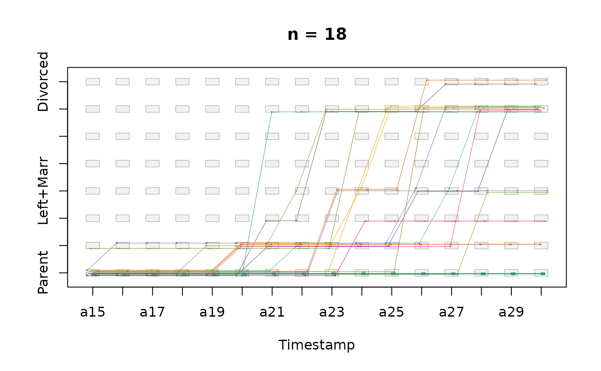
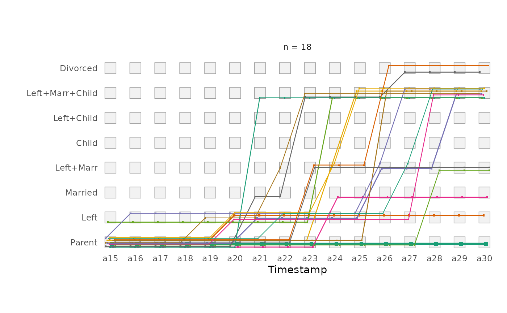
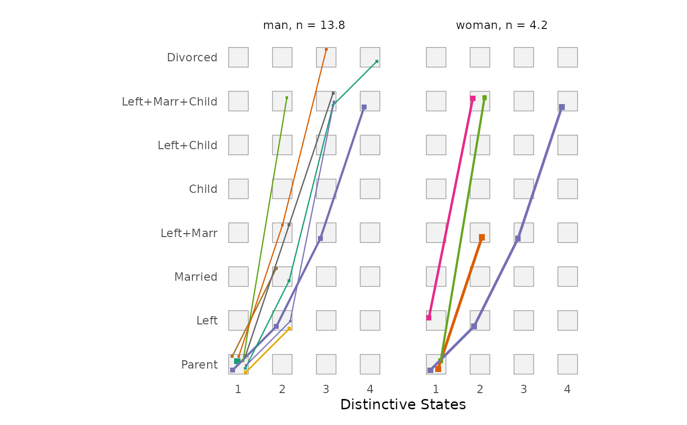
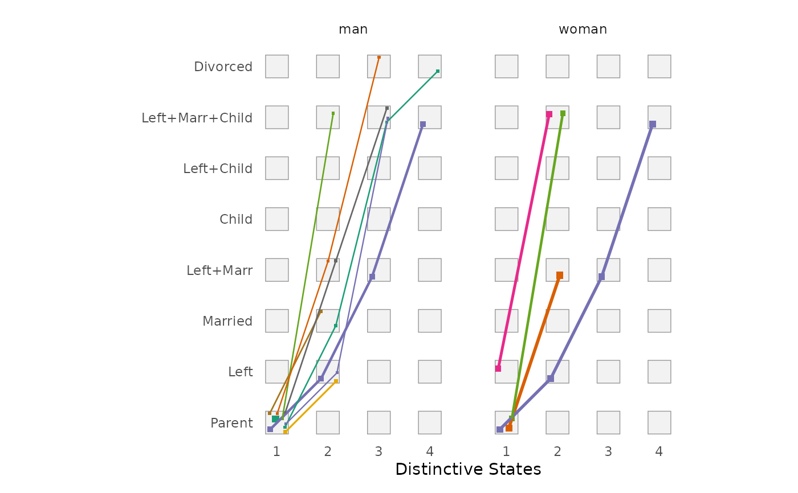
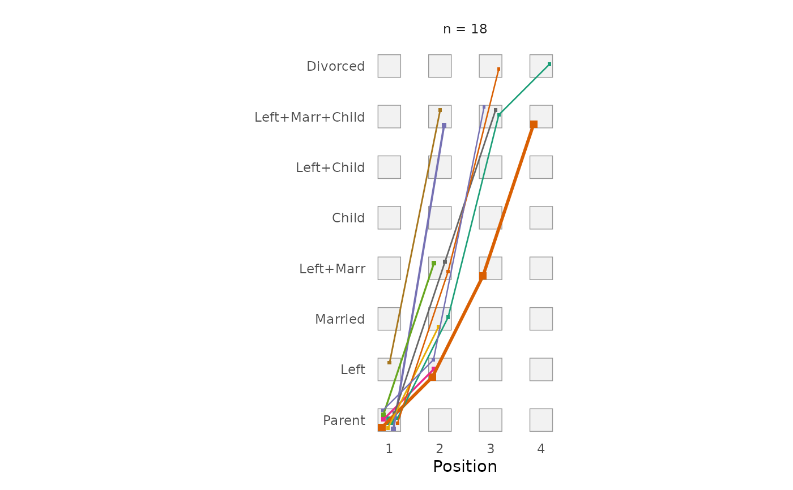

Function for rendering decorated parallel coordinate plots of state or event
sequences with ggplot2 (Wickham 2016)
instead of base R's plot function that is used by
TraMineR::seqpcplot
(Gabadinho et al. 2011; Bürgin and Ritschard 2014)
.
Usage
ggseqpcplot(
seqdata,
group = NULL,
no.n = FALSE,
linewidth = 1,
facet_ncol = NULL,
facet_nrow = NULL,
...
)Arguments
- seqdata
State sequence object (class
stslist) created with theTraMineR::seqdeffunction or event sequence object (classseqelist) created with theTraMineR::seqecreatefunction.- group
A vector of the same length as the sequence data indicating group membership. When not NULL, a distinct plot is generated for each level of group.
- no.n
specifies if number of (weighted) sequences is shown above the plot (default is
FALSE, i.e. the number is shown). IfTRUEonly the group labels are shown (or no label at all ifgroupis not specified).- linewidth
Maximum width of the lines connecting the states/events, i.e. the width of the line representing the most frequent transition; default is
1. The width of all other lines is scaled relative to this value.- facet_ncol
Number of columns in faceted (i.e. grouped) plot
- facet_nrow
Number of rows in faceted (i.e. grouped) plot
- ...
additional arguments passed on to
TraMineR::seqpcplot, which computes the coordinates of the plot, e.g.order.align,ltype,embedding,filter,cpal,alphabet,weighted,grid.scale, orcex.
Value
A decorated parallel coordinate plot created by using
ggplot2. If stored as object the resulting list object
(of class gg and ggplot) also contains the data used for rendering the squares
(states/events) of the plot; the data of the lines are stored in the layer
rendering the lines.
Details
Decorated parallel coordinate plots (Bürgin and Ritschard 2014) display each distinct sequence as a line connecting its successive states (or events). The x-axis shows the position (or time) and the y-axis the states (or events). The size of the squares and the width of the lines are proportional to the (weighted) number of sequences following the respective pattern. Patterns that are followed by several sequences are shifted slightly (jittered) within the squares of the background grid to keep them distinguishable.
The function calls TraMineR::seqpcplot with
plot = FALSE to compute the coordinates, sizes, and colors of all plot
elements. Hence, all arguments of
TraMineR::seqpcplot that affect the
computation (e.g., order.align or filter) can be passed via
.... The squares are rendered with geom_rect,
the lines with geom_segment. If group is
specified the group-specific plots are produced by using
facet_wrap.
Note that TraMineR::seqpcplot computes the line widths relative to the size of the
graphics device, whereas ggplot2 uses absolute line widths. The line
widths are therefore scaled relative to the most frequent transition and
can be adjusted with the linewidth argument.
The data and specifications used for rendering the plot can be obtained by
storing the plot as an object. The appearance of the plot can be adjusted
just like with every other ggplot (e.g., by changing the theme or the scale
using + and the respective functions).
References
Bürgin R, Ritschard G (2014).
“A Decorated Parallel Coordinate Plot for Categorical Longitudinal Data.”
The American Statistician, 68(2), 98–103.
doi:10.1080/00031305.2014.887591
.
Gabadinho A, Ritschard G, Müller NS, Studer M (2011).
“Analyzing and Visualizing State Sequences in R with TraMineR.”
Journal of Statistical Software, 40(4), 1–37.
doi:10.18637/jss.v040.i04
.
Wickham H (2016).
ggplot2: Elegant Graphics for Data Analysis, Use R!, 2nd ed. edition.
Springer, Cham.
doi:10.1007/978-3-319-24277-4
.
Examples
library(TraMineR)
# Use example data from TraMineR: biofam data set
data(biofam)
biofam.lab <- c("Parent", "Left", "Married", "Left+Marr",
"Child", "Left+Child", "Left+Marr+Child", "Divorced")
# We use only the first 20 cases
biofam.seq <- seqdef(biofam[, 10:25], labels = biofam.lab,
weights = biofam$wp00tbgs)[1:20, ]
#> [>] 8 distinct states appear in the data:
#> 1 = 0
#> 2 = 1
#> 3 = 2
#> 4 = 3
#> 5 = 4
#> 6 = 5
#> 7 = 6
#> 8 = 7
#> [>] state coding:
#> [alphabet] [label] [long label]
#> 1 0 0 Parent
#> 2 1 1 Left
#> 3 2 2 Married
#> 4 3 3 Left+Marr
#> 5 4 4 Child
#> 6 5 5 Left+Child
#> 7 6 6 Left+Marr+Child
#> 8 7 7 Divorced
#> [>] sum of weights: 2119.09 - min/max: 0/6.02881860733032
#> [>] 2000 sequences in the data set
#> [>] min/max sequence length: 16/16
# parallel coordinate plot of the state sequences (time on x-axis)
# with TraMineR::seqpcplot
seqpcplot(biofam.seq, order.align = "time")

# with ggseqplot
ggseqpcplot(biofam.seq, order.align = "time")

# distinct successive states (order on x-axis), grouped by sex
ggseqpcplot(biofam.seq, group = biofam$sex[1:20], order.align = "first")

# ... without number of sequences
ggseqpcplot(biofam.seq, group = biofam$sex[1:20], order.align = "first",
no.n = TRUE)

# event sequences
biofam.eseq <- seqecreate(biofam.seq, tevent = "state")
ggseqpcplot(biofam.eseq, order.align = "first", alphabet = biofam.lab)
